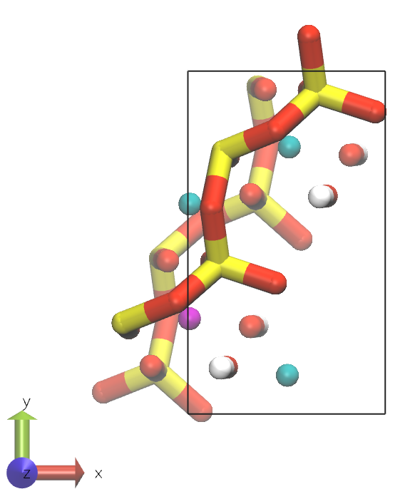
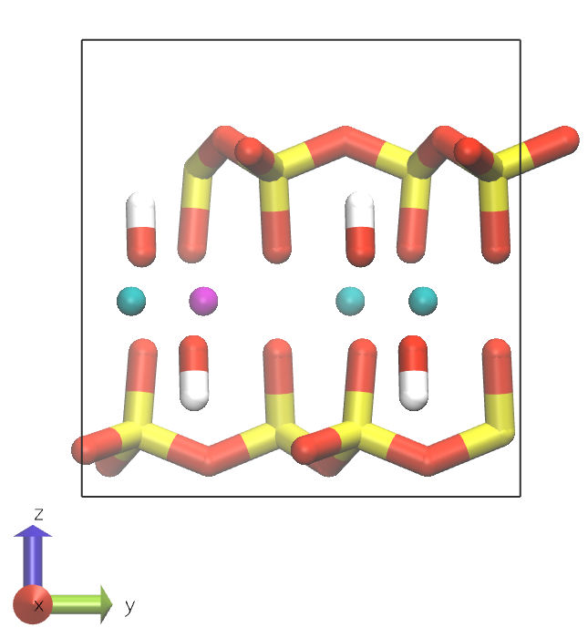
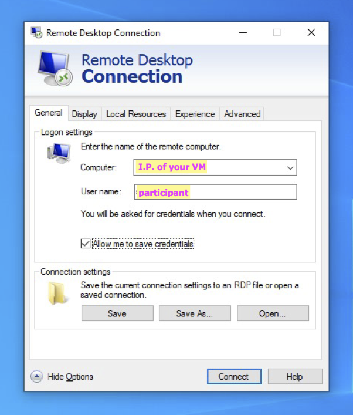
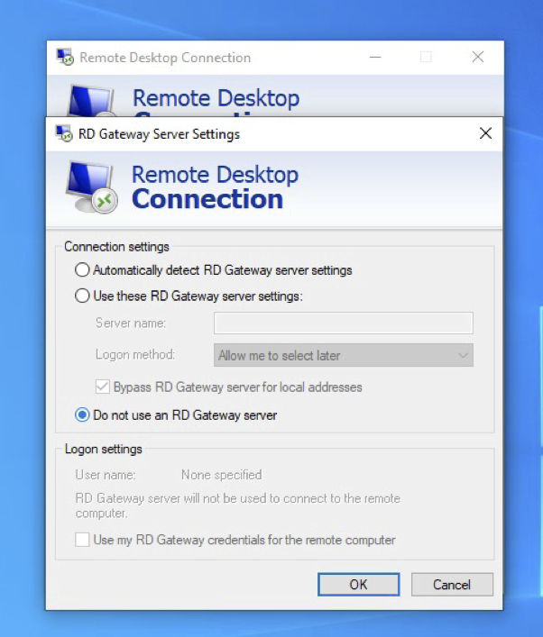
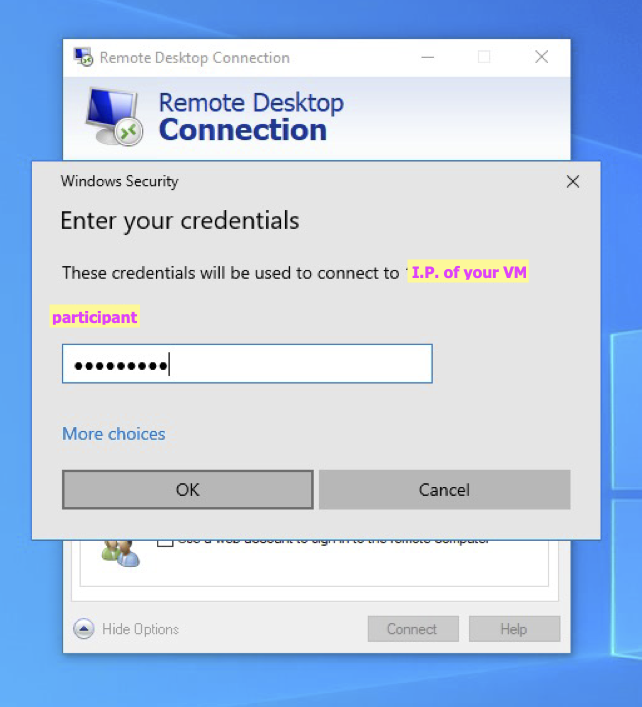
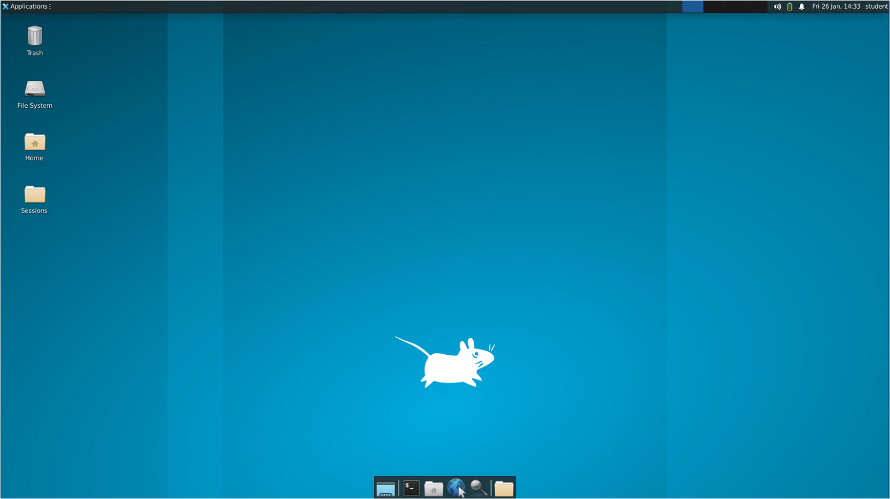
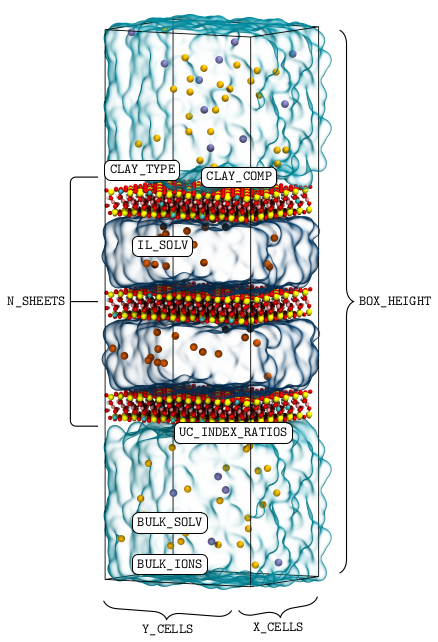
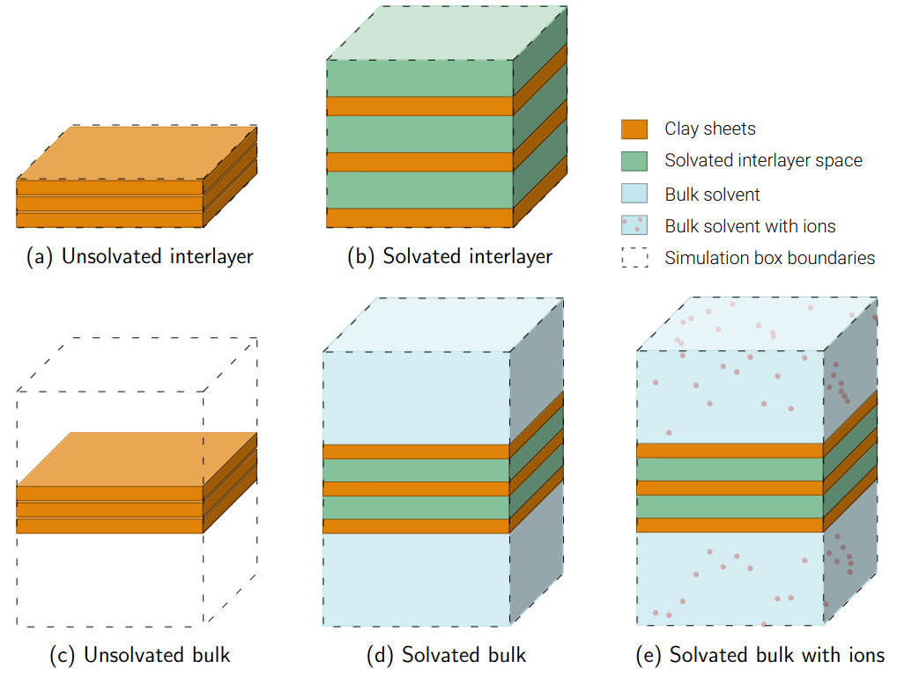
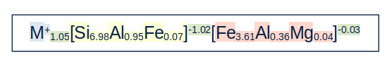
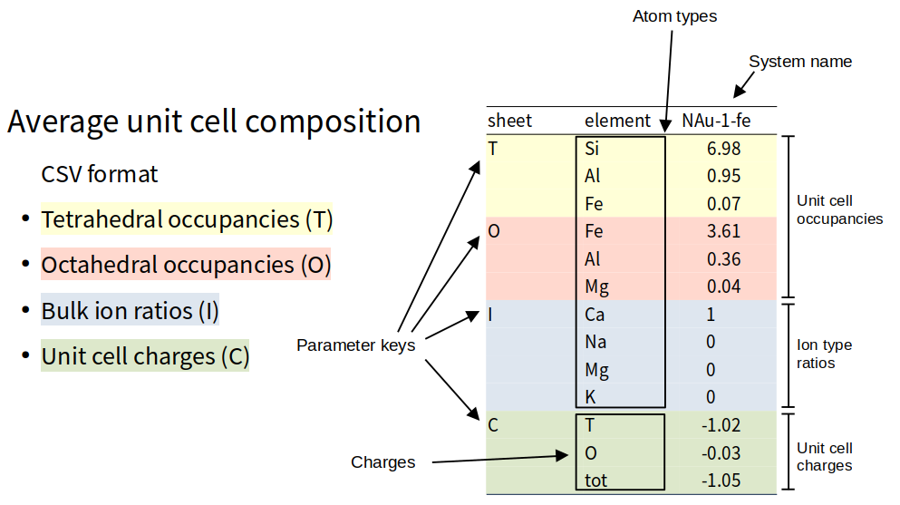

Creating accurate clay models for classical molecular dynamics (MD) simulations can be a time-consuming and
error-prone process.
ClayCode is a Python package that can be used to automate this process.
The package is designed with default options to require only minimal user input. At the same time, it is
flexible for users to specify their own build directives if they wish to do so.
ClayCode assembles clay sheets from an internal unit cell (UC) database containing a selection of different
UC types that have been constructed from crystallographic data from the American Mineralogist Crystal Structure
Database (AMCSD). A summary of all currently available and future UC types in the ClayCode UC database can be
found in
table 1.
Summary of available and future clay and layered double hydroxide (LDH) UC types in the ClayCode UC
database with respective with American Mineralogist Crystal Structure Database (AMCSD) IDs.
UC type
Description
AMCSD code
TD21
trans-dioctahedral 2:1 UC
0007180
CD21
cis-dioctahedral 2:1 UC
0002868
TD11
trans-dioctahedral 1:1 UC
will be added
CD11
cis-dioctahedral 1:1 UC
0012237
T21
trioctahedral 2:1 UC
0015819
T11
trioctahedral 2:1 UC
will be added
LDH21
2:1 LDH UC
will be added
LDH31
3:1 LDH UC
0007912
A list of all substitutions in the database UCs are given in table 2.
Table 2: Summary of tetrahedral (T) and octahedral (O) substitutions in database dioctahedral (dio) and
trioctahedral (trio) UCs.
sheet
UC type
substituted atom
substituting atom
charge (e UC-1)
T
dio, trio
Si4+
(st)
→
Al3+
(at)
-1.0
T
dio, trio
Si4+
(st)
→
Fe3+
(fet)
-1.0
O
dio
Al3+
(ao)
→
Fe2+
(fe2)
-1.0
O
dio
Al3+
(ao)
→
Fe3+
(feo)
0.0
O
dio
Al3+
(ao)
→
Mg2+
(mgo)
-1.0
O
dio
Fe3+
(feo)
→
Al2+
(ao)
0.0
O
dio
Fe3+
(feo)
→
Fe2+
(fe2)
-1.0
O
dio
Fe3+
(feo)
→
Mg2+
(mgo)
-1.0
O
trio
Mg2+
(mgo)
→
Li1+
(lio)
-1.0
The substitutions is the UCs are placed so that any combination of UCs of the same type will yield a sheets
where the substitution placement obeys the Loewenstein rule.
Figure 2 shows an example of a substituted cis-dioctahedral
2:1 UC.


cis-dioctahedral 2:1 UC top view (left) and side view (right).
Atom type colours
Element
Colour
empty
Element
Colour
Si
yellow
empty
Al
cyan
O
red
empty
Mg
purple
H
white
empty
C
gray
Getting Started
Connecting to the virtual machine
Connect to the virtual machine from Windows
Use the ‘Remote Desktop’ application to connect to the virtual machine
Log into the computer
Open Remote Desktop Connection
Click Show Options
Enter the IP address of your virtual machine
Enter username participant
Tick the box for Allow me to save credentials

Go to the Advanced tab
Click Settings under Connect from anywhere
Click Do not use an RD Gateway server and then click OK

Click Connect. If asked whether you trust the computer, tick the box for Don’t ask me
again
for connections to this computer and click Yes
When prompted to enter credentials, enter the password clays

You should be logged into the virtual machine

IMPORTANT: When you reconnect again, the IP address and your username will be saved, but
you need to tick
the
box
for Allow me to save credentials every time. If you forget this, you might not be able to log
in.
Connect to the virtual machine from other
machines
Connect to the virtual machine through the pre-installed Remote Desktop application
If using Mac - download Microsoft Remote Desktop from the App
Store.
If using Linux/Chrome - you should have a preinstalled Remote
Desktop/Virtual Machine app.
Follow the instructions above.
Installing ClayCode
Requirements
On this workshop's virtual machine (VM), all of the requirements are already installed. If you would like to
use
ClayCode on your own computer, the following software and python packages need to be installed.
Python 3.10
Pipx
GROMACS 2018 ‐ 2023
MDAnalysis (for d-spacing equilibration runs)
Installation
Installing ClayCode
Download ClayCode from the GitHub repository
Download ClayCode as a zip file. To do this, go to https://github.com/Erastova-group/ClayCode.git,
click on
the "<> Code" button and select "Download ZIP". Once downloaded, extract
the
contents of the zip file to a location of your choice.
Inside the ClayCode folder, there is the install.sh installation file. Use it to
install
the ClayCode package:
bash install.sh
Use cd ... to navigate directories in the terminal.
When doing this on your own computer, make sure all of the requirements
are
installed.
Once the installation was successful, you can use the package with the command
ClayCode
For example, to build a model, the command would be:
ClayCode builder <options>
Building accurate clay models
To build a clay model, the following build instructions need to be provided as files:
Specifications on system size, solvation, number of stacked clay sheets, etc. (in YAML format).
Information about the model chemical composition (either as target stoichiometry (in CSV
(comma-separated
values) format or as individual UC indices and their ratios in the specifications YAML file)
The following sections contain instructions for using ClayCode to build a clay model by specifying a target
stoichiometry and by giving UC indices and their ratios. In both cases, the user needs to provide a
specifications
file containing the build instructions.
Prepare the specifications file
Adjust the build specifications for your clay
Inside the builder folder, you can find a template for the specifications file
specifications.yaml.
Have a look at the different options in the specifications.yaml file, such as the
number
of
clay sheets in the stack or species and concentration of
bulk ions.
Some of the builder options are illustrated in figure
2.
Figure 3 shows different sheet and solvent arrangements that can be
generated with ClayCode.

Figure 2: Illustration of the build options in the specification file.

Illustration of different sheet and solvent arrangements that can be generated with ClayCode.
Preparing a clay model to match a target composition
The first option is to provide a target composition file in CSV format. This file should contain the target
composition of the clay model.
For this workshop we suggest setting one of the following Clay Minerals Society source clay compositions (clays.org/sourceclays_data/) as the target:
SWy-1/SWy-2/SWy-3
SAz1/SAz-2
STx-1
NG-1
NAu-1
NAu-2
Prepare the target composition file
Add a new entry for your selected clay.
Inside the builder folder, you can find a template for the target composition file
target_composition.csv.
target_composition.csv currently only contains the index columns.
Add a new entry for your selected source clay to the file.
As illustrated in figure 4, the column header identifies the clay
type,
the
entries below describe the average tetrahedral and octahedral UC occupancies, charges and
interlayer
ion types and ratios.


Figure 4: Structure of the target composition file CSV file.
Notes:
ClayCode will only include
atom tetrahedral and octahedral occupancies that exceed a minimum UC occupancy.
Smaller occupancies will be ignored and the missing atoms will be replaced by other
atoms
types of
the same charge.The default value for this is 0.05 atoms UC-1.
The threshold can be adjusted through the ZERO_THRESHOLD keyword in the
specifications.yaml
file.
If target occupancies do not sum to the expected tetrahedral or octahedral values but
lie
within
the OCC_TOL threshold (default 0.1 atoms UC-1), the
occupancies will be
adjusted to match expected values.
If a target composition contains elements without ClayFF parameters and their
occupancies
exceed ZERO_THRESHOLD,
ClayCode will ask for confirmation to remove these atoms from the target composition. It
will furthermore ask for the charge of the removed atoms.
Charges resulting from invalid atom types will be subtracted from the respective UC
charges.
The maximum accepted absolute deviation from the specified target composition can be
adjusted with the MATCH_TOLERANCE parameter. The default value is 0.025 atoms UC-1.
The SEL_PRIORITY and CHARGE_PRIORITY specify how adjustments
are
made in case of incomplete
occupancies or mismatches between occupancy and charge and tetrahedral (T) and
octahedral
(O)
charges and total charge.
The default values are:
SEL_PRIORITY: charges ← Charges are preserved and substitution
occupancies are adjusted
CHARGE_PRIORITY: total_charge ← T and O charges are
adjusted and total charge is preserved
Once the target composition file is prepared, the clay model can be built using the ClayCode
builder
Build the clay model
Use ClayCode builder to construct a clay model:
ClayCode builder -f /path/to/specifications.yaml
ClayCode will create a SYSNAME directory inside OUTPATH. This directory
contains
the output files that are generated during the build process.
The final energy minimised structures are placed inside the EM folder.
Preparing a clay model with UC indices and their ratios
The second option is to provide UC indices and their ratios in the specifications file. Choose this method
if
you
want to use specific UCs and know their ratios within a sheet.
Prepare the UC indices and ratios file
Specify the target composition through UC indices and ratios
Remove the CLAY_COMP from the specifications.yaml file and instead add the
UC_INDEX_RATIOS option.
When choosing this option, instead of providing the path to the target composition file in the
specifications.yaml file, delete or comment out the CLAY_COMP line and
instead
add
the UC indices and ratios with the UC_INDEX_RATIOS option.
For example, a simplified montmorillonite can be constructed from the cis-dioctahedral 2:1 C213 UC:
UC_INDEX_RATIOS: {C213: 1}
The ratios of the UCs can sum to any number, as the UCs will be normalised to the total number
of
UCs in the
sheet.
To build the clay model, follow the same procedure as in task 4.
Visualising the clay model
Once the clay model has been built, it can be visualised using VMD.
Visualise the clay model
Use VMD to visualise the clay model
Open VMD by typing vmd in the terminal.
Load the final energy minimised structure into VMD:
In the main window, click File →
New Molecule ... and select final structure ending in "em.gro" (not
"pre_em.gro")
inside the
EM output folder.
You can move the molecule around by clicking and dragging the mouse.
Press R to rotate the molecule (default), T to translate it and
S to scale it.
Click on Display → Reset view to reset the view.
Change the representations
Click on Graphics → Representations and change Drawing
Method or Coloring Method to see how the molecule representation changes.
For the clay, the Polyhedra or Licorice representations are good choices.
You can also change the representation of a subset of atoms by selecting them in the Graphical
Representations window.
For this, click on Create Rep inside the Graphical Representations
window.
In the Selected Atoms field you can replace the all by a selection
command.
E.g. to select all atoms of the residue with the number 10, you can use resid 10,
for
all atoms of the residue with the name CD2013 use resname CD2013, etc.
You can find more information about selection commands in the VMD user guide: www.ks.uiuc.edu/Research/vmd/current/ug/node89.html.
Inserting molecules into the bulk space
If the clay model was constructed to study adsorption, the next step is to insert molecules into the bulk
space.
Insert decanoic acid molecules
Insert 10 decanoic acid molecules into the bulk space of the clay model.
Inside the insert-molecules folder, you can find the topology and coordinate files for
a
decanoic acid molecule.
‐f specifies the coordinate file of the system to insert into. ‐ci specifies the coordinate file of the molecule to insert. ‐nmol defines the number of molecules to insert. ‐o specifies the output coordinate file name.
GROMACS will try to fit the requested number of molecules in the available space. It will
notify you about whether it was successful or not.
Before proceeding to the next step, the topology file needs to be adjusted to include the decanoic acid
molecules.
that includes all molecules present in the system. The following explains the structure of GROMACS
topology files in some more detail.
In the first section, the force field parameters are defined. These always include combination rules and
non‐bonded interaction parameters (atom types, atomic masses, atomic charges, Lennard‐Jones
parameters).
They can optionally include
bonded interaction definitions (bond, angle and dihedral types with bond, angle and dihedral interaction
force constants and equilibrium values in this order). A detailed explanation can be found in the GROMACS
documentation pages: topology files,
topologies and
force fields.
Even if they consist of only one atom, all atoms of the system are part of molecules. These are defined
in the second section, [ moleculetype ]. All molecule type definitions, such as the
MMT UC,
decanoic acid, water and ions need to be included in the topology file.
Elements from the first two sections are usually defined in separate files that are included in the topology
file.
The syntax for including files is #include "<filename>".
The third section contains the system name and the number of molecules of each type in the system. The
system section starts with the keyword [ system ] and is followed by a name chosen for the
system (the choice of the name does not really matter).
The number of molecules of each type is specified in the [ molecules ] section.
Important: The order of the molecules in the [ molecules ] section must match the
order of the molecules in the .gro file.
Update the topology file
Add the decanoic acid molecules and their force field parameters to the topology file.
Open the topology file final topology file inside the EM folder and add the 10 inserted DECA
molecules
at the bottom of the [ molecules ] section.
Include the force field parameters for the decanoic acid molecules in the topology file. In this
example, the CHARMM36 force field (located inside the insert-molecules folder) will be
used. Include the bonded and nonbonded force field parameters at the correct positions in the
topology file.
; denotes a comment.
Since decanoic acid is a charged molecule, the system will need to be neutralised with counterions.
Neutralise the system
Use GROMACS to neutralise the system with Na+ ions:
Generate a run TPR file for the system :
Because neutralising requires information about the system topology, adding ions with
genion requires a compiled topology file. Use
grompp to
generate such a TPR file. The contents of the run parameter MDP input
file
is not important
for
this step, but it has to be provided. Use the genion.mdp parameter file from the
insert-molecules/MDP folder.
‐f specifies the input run parameter file. ‐c specifies the coordinate file of the system to solvate. ‐p specifies the topology file. ‐o specifies the compiled output .tpr file. ‐pp specifies the output topology file. ‐maxwarn specifies the maximum number of warnings that can be ignored.
If the protein has a charge, grompp will generate a warning that needs to be
ignored.
The ‐pp has to be used here
to generate a new topology file with ions is used here rather than with the
genion
command.
grompp will generate a note similar to this one:
NOTE 3 [file MMT_dec_solv.top, line 40]:
In moleculetype 'MMT' 32 atoms are not bound by a potential or constraint
to any other atom in the same moleculetype. Although technically this
might not cause issues in a simulation, this often means that the user
forgot to add a bond/potential/constraint or put multiple molecules in
the same moleculetype definition by mistake. Run with ‐v to get
information for each atom.
This note is not an error, but a warning that the atoms in the clay sheet are not bonded to each
other. Because ClayFF is a non‐bonded force field, this is not an error, and you can ignore
this
message.
Use GROMACS genion to neutralise the system with Na+ ions:
‐s specifies the input coordinate file of the system to solvate. ‐o specifies the output coordinate file ‐p specifies the input topology file ‐pname specifies the name of the positive ion ‐nname specifies the name of the negative ion ‐neutral – neutralise the system
You will be asked which molecules should be replaced with ions. Select the code for the bulk
water SOL molecules.
Generating simulation input files
ClayCode can be used to generate simulation input files for GROMACS.
Default run options are available for GROMACS versions 2018-2023 and the following run types:
Energy minimisation (EM)
Equilibration (EQ)
without temperature or pressure coupling
with temperature coupling at constant volume (NVT)
with pressure coupling at constant temperature and pressure (NpT)
d-spacing equilibration (D_SPACE)
Production (any other name)
Like the build instructions, the simulation input file is generated from a YAML file containing the
simulation
run parameters.
Since time is short, use ClayCode siminp to generate the simulation input files and scripts for an energy
minimisation.
Prepare a simulation input file
Inside the builder folder, you can find a template for the simulation input file
simulation.yaml.